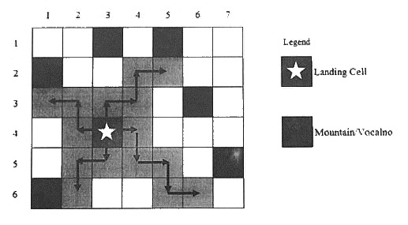

Alpha Centauri-M (ACM) là một hành tinh với rất nhiều cảnh đẹp cho du khách từ Trái đất. Bản đồ của ACM được chia thành một lưới gồm M dòng, N cột. Các cột được đánh số từ 1 đến N theo chiều từ trái sang phải. Các dòng được đánh số từ 1 đến M theo chiều từ trên xuống dưới. Có một vài ô của lưới là núi lửa nên không thể viếng thăm được. Các ô còn lại gọi là ô an toàn.
Khi tiến đến ACM, phi thuyền sẽ hạ cánh tại một ô an toàn nào đó. Sau đó du khách sẽ viếng thăm hành tinh bằng xe tự hành. Bắt đầu từ ô hạ cánh (r0, c0), xe tự hành có thể đi đến bốn ô lân cận là (r0-1, c0), (r0+1, c0), (r0, c0-1), (r0, c0+1). Sau đó xe tự hành sẽ tiếp tục di chuyển theo quy tắc sau:
1. Quẹo phải và tiến đến 1 ô.
2. Quẹo trái và tiến đến 1 ô.
3. Thực hiện lại bước 1.
Xe tự hành chỉ có thể viếng thăm ô an toàn, vì vậy nó sẽ dừng lại nếu ô kế tiếp là không an toàn hoặc đi ra ngoài bản đồ. Hình bên dưới minh họa một bản đồ gồm M= 6 dòng và N= 7 cột. Từ ô hạ cánh là ô (4, 3), bạn có thể viếng thăm 16 ô, kể cả ô hạ cánh.

Nhiệm vụ của bạn là tìm ô hạ cánh sao cho có thể viếng thăm nhiều ô nhất của Alpha Centauri-M.
Dữ liệu nhập:
- Dòng đầu tiên là hai số nguyên M, N cách nhau một khoảng trắng (1 ≤ M, N ≤ 1000).
- Trong M dòng tiếp theo, mỗi dòng chứa các số 0, 1 thể hiện tình trạng bản đồ (1 là ô an toàn, 0 là ô không an toàn), các số xếp sát nhau.
Dữ liệu xuất:
- Là số nguyên xác định số lượng ô có thể thăm nhiều nhất.